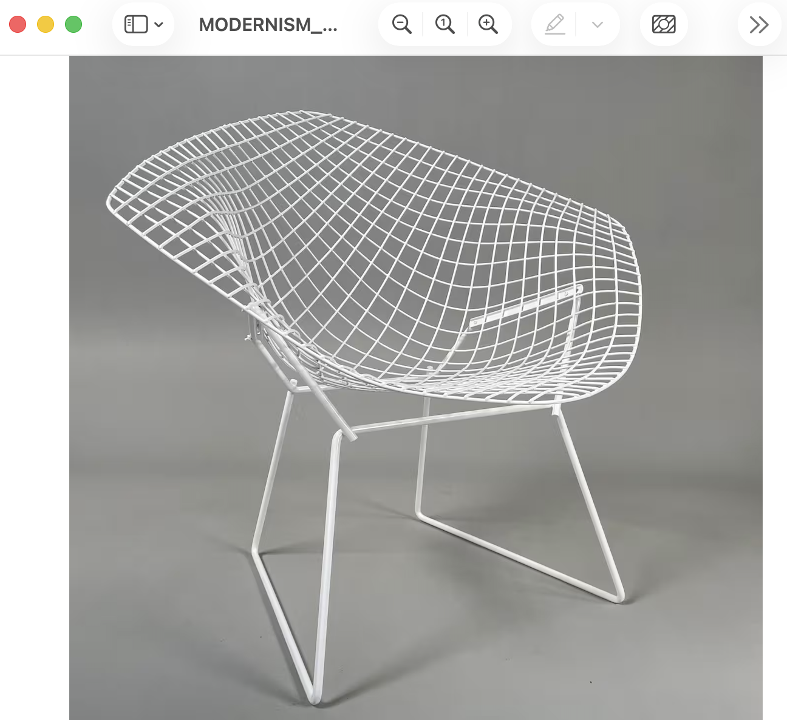

I was excited to be working at a well-established newsroom in New York City after graduating.


I wrote articles for Mansion Global, a Dow Jones publication covering global luxury real estate.
I spent my days writing across the industry: who was buying what, how the market in a certain region performed in a certain week, what new multi-million dollar mansion was being primed to sell.
After some time, I realized I really loved talking and thinking about design.
I found that I was most drawn to stories that allowed me to dig deeper into others' ideas about how space and life should connect.
I got my reps in, getting better at writing sharper and faster.